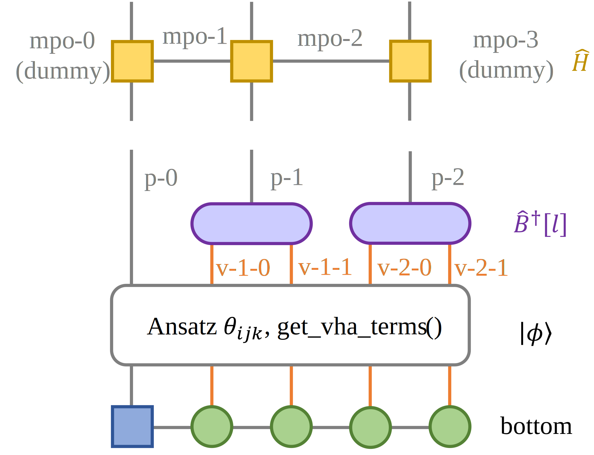
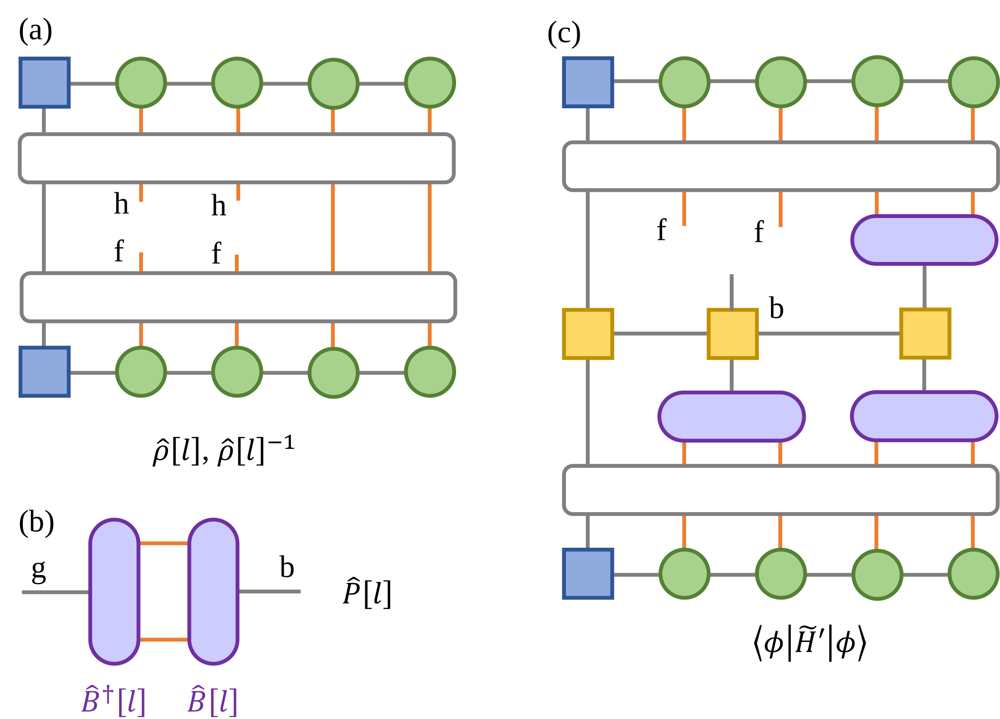

Variational Basis State Encoder (Time Dependent)#
1 Background#
This tutorial is for the time evolution of variational basis state encoder (VBE). Here, spin-boson model is taken as an example. As shall be presented below, the key is to calculate \(\dot{\theta}_j\) and \(\dot{C}[l]^*\). The algorithm realization are presented in section 2. For more theoretical derivations, see https://doi.org/10.1103/PhysRevResearch.5.023046.
2 Algorithm Realization#
2.1 Imports#
[1]:
import numpy as np
from scipy.integrate import solve_ivp
from opt_einsum import contract
import tensorcircuit as tc
from tencirchem import set_backend, Op, Mpo, Model, OpSum
from tencirchem.dynamic import get_ansatz, get_deriv, get_jacobian_func, qubit_encode_basis, sbm
from tencirchem.applications.vbe_lib import get_psi_indices, get_contracted_mpo, get_contract_args
2.2 Initialize#
In this tutorial, we study the time evolution of the following spin-boson model:
Here, epsilon, delta, omega_list and g_list correspond to \(\epsilon\), \(\Delta\), \(\omega_j\) and \(g_j\) in the Hamiltonian, respectively. In this section, the parameters are defined and the circuit is initialized. The schematic diagram of the circuit is plotted in Fig. 1, where blue square corresponds to qubit representing spin and green circles correspond to qubits representing vibrations.  Fig. 1 Schematic diagram of the circuit.
[2]:
set_backend("jax")
epsilon = 0
delta = 1
omega_list = [0.5, 1]
g_list = [0.25, 1]
nmode = len(omega_list) # number of phonon modes
# make sure correct input
assert nmode == len(g_list)
# two qubit for each mode
n_qubit_per_mode = 2
nbas_v = 1 << n_qubit_per_mode
# -1 for electron dof, natural numbers for phonon dof
dof_nature = np.array([-1] + [0] * n_qubit_per_mode + [1] * n_qubit_per_mode)
b_dof_pidx = np.array([1, 2]) # index of basis that need VBE
n_dof = len(dof_nature)
psi_shape2 = [2] * n_dof
psi_idx_top, psi_idx_bottom, b_dof_vidx = get_psi_indices(dof_nature, b_dof_pidx, n_qubit_per_mode)
print(
"psi_index_top: ",
psi_idx_bottom,
"\npsi_index_bottom: ",
psi_idx_bottom,
"\nb_dof_vidx: ",
b_dof_vidx,
"\npsi_shape2: ",
psi_shape2,
)
# spin boson model has been define in tencirchem.dynamic.model
def get_model(epsilon, delta, nmode, omega_list, g_list, nlevels):
ham_terms = sbm.get_ham_terms(epsilon, delta, nmode, omega_list, g_list)
basis = sbm.get_basis(omega_list, nlevels)
return Model(basis, ham_terms)
nbas = 16 # number of phonon levels (basis)
b_shape = tuple([2] * n_qubit_per_mode + [nbas])
assert len(omega_list) == nmode
assert len(g_list) == nmode
model = get_model(epsilon, delta, nmode, omega_list, g_list, [nbas] * nmode)
h_mpo = Mpo(model)
# generate the quantum circuit with defined qubits
circuit = tc.Circuit(1 + nmode * n_qubit_per_mode)
psi0 = circuit.state()
n_layers = 3 # layers of ansatz
2023-08-08 16:12:43.927000: E external/org_tensorflow/tensorflow/compiler/xla/stream_executor/cuda/cuda_driver.cc:267] failed call to cuInit: CUDA_ERROR_NO_DEVICE: no CUDA-capable device is detected
WARNING:jax._src.lib.xla_bridge:No GPU/TPU found, falling back to CPU. (Set TF_CPP_MIN_LOG_LEVEL=0 and rerun for more info.)
psi_index_top: ['p-0-bottom', 'v-1-0-bottom', 'v-1-1-bottom', 'v-2-0-bottom', 'v-2-1-bottom']
psi_index_bottom: ['p-0-bottom', 'v-1-0-bottom', 'v-1-1-bottom', 'v-2-0-bottom', 'v-2-1-bottom']
b_dof_vidx: [array([1, 2]), array([3, 4])]
psi_shape2: [2, 2, 2, 2, 2]
2.3 Get variational Hamiltonian ansatz terms#
In this section, we will generate variational hamiltonian ansatz terms. The following ansatz is adopted:
if
Note that the phonon operators have been transformed to qubit operators based on Gray Encoding.
[3]:
def get_vha_terms():
basis = sbm.get_basis(omega_list, [nbas_v] * nmode)
spin_basis = qubit_encode_basis(basis, "gray")
spin_ham_terms = OpSum([Op("X", ["spin"], 1.0)])
for i in range(nmode):
complete_list = []
for j in range(n_qubit_per_mode):
complete = OpSum()
dof = (f"v{i}", f"TCCQUBIT-{j}")
for symbol in "IXYZ":
complete += Op(symbol, dof)
complete_list.append(complete)
complete_real = complete_list[0]
for c in complete_list[1:]:
complete_real = complete_real * c
spin_ham_terms.extend(complete_real)
spin_ham_terms.extend(Op("Z", "spin") * complete_real)
spin_ham_terms = OpSum([op.squeeze_identity() for op in spin_ham_terms.simplify() if not op.is_identity]).simplify()
return spin_ham_terms, spin_basis
spin_ham_terms, spin_basis = get_vha_terms()
print(spin_basis)
for i in range(len(spin_ham_terms)):
print(spin_ham_terms[i])
theta0 = np.zeros(n_layers * len(spin_ham_terms), dtype=np.float64)
ansatz = get_ansatz(spin_ham_terms, spin_basis, n_layers, psi0)
jacobian_func = get_jacobian_func(ansatz)
[BasisHalfSpin(dof: spin, nbas: 2), BasisHalfSpin(dof: ('v0', 'TCCQUBIT-0'), nbas: 2), BasisHalfSpin(dof: ('v0', 'TCCQUBIT-1'), nbas: 2), BasisHalfSpin(dof: ('v1', 'TCCQUBIT-0'), nbas: 2), BasisHalfSpin(dof: ('v1', 'TCCQUBIT-1'), nbas: 2)]
Op('X', ['spin'], 1.0)
Op('X', [('v0', 'TCCQUBIT-1')], 1.0)
Op('Y', [('v0', 'TCCQUBIT-1')], 1.0)
Op('Z', [('v0', 'TCCQUBIT-1')], 1.0)
Op('X', [('v0', 'TCCQUBIT-0')], 1.0)
Op('X X', [('v0', 'TCCQUBIT-0'), ('v0', 'TCCQUBIT-1')], 1.0)
Op('X Y', [('v0', 'TCCQUBIT-0'), ('v0', 'TCCQUBIT-1')], 1.0)
Op('X Z', [('v0', 'TCCQUBIT-0'), ('v0', 'TCCQUBIT-1')], 1.0)
Op('Y', [('v0', 'TCCQUBIT-0')], 1.0)
Op('Y X', [('v0', 'TCCQUBIT-0'), ('v0', 'TCCQUBIT-1')], 1.0)
Op('Y Y', [('v0', 'TCCQUBIT-0'), ('v0', 'TCCQUBIT-1')], 1.0)
Op('Y Z', [('v0', 'TCCQUBIT-0'), ('v0', 'TCCQUBIT-1')], 1.0)
Op('Z', [('v0', 'TCCQUBIT-0')], 1.0)
Op('Z X', [('v0', 'TCCQUBIT-0'), ('v0', 'TCCQUBIT-1')], 1.0)
Op('Z Y', [('v0', 'TCCQUBIT-0'), ('v0', 'TCCQUBIT-1')], 1.0)
Op('Z Z', [('v0', 'TCCQUBIT-0'), ('v0', 'TCCQUBIT-1')], 1.0)
Op('Z', ['spin'], 2.0)
Op('Z X', ['spin', ('v0', 'TCCQUBIT-1')], 1.0)
Op('Z Y', ['spin', ('v0', 'TCCQUBIT-1')], 1.0)
Op('Z Z', ['spin', ('v0', 'TCCQUBIT-1')], 1.0)
Op('Z X', ['spin', ('v0', 'TCCQUBIT-0')], 1.0)
Op('Z X X', ['spin', ('v0', 'TCCQUBIT-0'), ('v0', 'TCCQUBIT-1')], 1.0)
Op('Z X Y', ['spin', ('v0', 'TCCQUBIT-0'), ('v0', 'TCCQUBIT-1')], 1.0)
Op('Z X Z', ['spin', ('v0', 'TCCQUBIT-0'), ('v0', 'TCCQUBIT-1')], 1.0)
Op('Z Y', ['spin', ('v0', 'TCCQUBIT-0')], 1.0)
Op('Z Y X', ['spin', ('v0', 'TCCQUBIT-0'), ('v0', 'TCCQUBIT-1')], 1.0)
Op('Z Y Y', ['spin', ('v0', 'TCCQUBIT-0'), ('v0', 'TCCQUBIT-1')], 1.0)
Op('Z Y Z', ['spin', ('v0', 'TCCQUBIT-0'), ('v0', 'TCCQUBIT-1')], 1.0)
Op('Z Z', ['spin', ('v0', 'TCCQUBIT-0')], 1.0)
Op('Z Z X', ['spin', ('v0', 'TCCQUBIT-0'), ('v0', 'TCCQUBIT-1')], 1.0)
Op('Z Z Y', ['spin', ('v0', 'TCCQUBIT-0'), ('v0', 'TCCQUBIT-1')], 1.0)
Op('Z Z Z', ['spin', ('v0', 'TCCQUBIT-0'), ('v0', 'TCCQUBIT-1')], 1.0)
Op('X', [('v1', 'TCCQUBIT-1')], 1.0)
Op('Y', [('v1', 'TCCQUBIT-1')], 1.0)
Op('Z', [('v1', 'TCCQUBIT-1')], 1.0)
Op('X', [('v1', 'TCCQUBIT-0')], 1.0)
Op('X X', [('v1', 'TCCQUBIT-0'), ('v1', 'TCCQUBIT-1')], 1.0)
Op('X Y', [('v1', 'TCCQUBIT-0'), ('v1', 'TCCQUBIT-1')], 1.0)
Op('X Z', [('v1', 'TCCQUBIT-0'), ('v1', 'TCCQUBIT-1')], 1.0)
Op('Y', [('v1', 'TCCQUBIT-0')], 1.0)
Op('Y X', [('v1', 'TCCQUBIT-0'), ('v1', 'TCCQUBIT-1')], 1.0)
Op('Y Y', [('v1', 'TCCQUBIT-0'), ('v1', 'TCCQUBIT-1')], 1.0)
Op('Y Z', [('v1', 'TCCQUBIT-0'), ('v1', 'TCCQUBIT-1')], 1.0)
Op('Z', [('v1', 'TCCQUBIT-0')], 1.0)
Op('Z X', [('v1', 'TCCQUBIT-0'), ('v1', 'TCCQUBIT-1')], 1.0)
Op('Z Y', [('v1', 'TCCQUBIT-0'), ('v1', 'TCCQUBIT-1')], 1.0)
Op('Z Z', [('v1', 'TCCQUBIT-0'), ('v1', 'TCCQUBIT-1')], 1.0)
Op('Z X', ['spin', ('v1', 'TCCQUBIT-1')], 1.0)
Op('Z Y', ['spin', ('v1', 'TCCQUBIT-1')], 1.0)
Op('Z Z', ['spin', ('v1', 'TCCQUBIT-1')], 1.0)
Op('Z X', ['spin', ('v1', 'TCCQUBIT-0')], 1.0)
Op('Z X X', ['spin', ('v1', 'TCCQUBIT-0'), ('v1', 'TCCQUBIT-1')], 1.0)
Op('Z X Y', ['spin', ('v1', 'TCCQUBIT-0'), ('v1', 'TCCQUBIT-1')], 1.0)
Op('Z X Z', ['spin', ('v1', 'TCCQUBIT-0'), ('v1', 'TCCQUBIT-1')], 1.0)
Op('Z Y', ['spin', ('v1', 'TCCQUBIT-0')], 1.0)
Op('Z Y X', ['spin', ('v1', 'TCCQUBIT-0'), ('v1', 'TCCQUBIT-1')], 1.0)
Op('Z Y Y', ['spin', ('v1', 'TCCQUBIT-0'), ('v1', 'TCCQUBIT-1')], 1.0)
Op('Z Y Z', ['spin', ('v1', 'TCCQUBIT-0'), ('v1', 'TCCQUBIT-1')], 1.0)
Op('Z Z', ['spin', ('v1', 'TCCQUBIT-0')], 1.0)
Op('Z Z X', ['spin', ('v1', 'TCCQUBIT-0'), ('v1', 'TCCQUBIT-1')], 1.0)
Op('Z Z Y', ['spin', ('v1', 'TCCQUBIT-0'), ('v1', 'TCCQUBIT-1')], 1.0)
Op('Z Z Z', ['spin', ('v1', 'TCCQUBIT-0'), ('v1', 'TCCQUBIT-1')], 1.0)
2.4 Time Evolution#
This sections defines the function involved in time evolution. The derivations \(\dot{\theta}_j\) are calculated by following equation:
where
, and \(\frac{\partial \ket{\phi}}{\partial \theta_j}\) is calculated via theta_deriv. The time derivations of \(B[l]\) are calculated by following equations:
where
the projection operator
and the reduced density matrix
An example that illustrates the function in detail is also presented below.  Fig. 2 Graphic illustration of (a) \(\rho[l]\), (b) \(P[l]\), (c) \(\bra\phi\tilde{H}'[l]\ket\phi\)
[4]:
def deriv_fun(t, theta_and_b):
# split \thera and b to independent arrays
theta = theta_and_b[: len(theta0)]
psi = ansatz(theta)
b_array = theta_and_b[len(theta0) :].reshape(nmode, nbas_v, nbas)
# get contracted H
h_contracted = get_contracted_mpo(h_mpo, b_array, n_qubit_per_mode, b_dof_pidx, psi_idx_top + psi_idx_bottom)
# get the derivation of \theta
theta_deriv = get_deriv(ansatz, jacobian_func, theta, h_contracted)
psi = psi.reshape(psi_shape2)
b_deriv_list = []
for i in range(nmode):
b = b_array[i]
# calculate rho
indices_base = [("contract", ii) for ii in range(n_dof)]
psi_top_indices = indices_base.copy()
psi_bottom_indices = indices_base.copy()
for j in b_dof_vidx[i]:
psi_top_indices[j] = ("top", j)
psi_bottom_indices[j] = ("bottom", j)
out_indices = [("top", j) for j in b_dof_vidx[i]] + [("bottom", j) for j in b_dof_vidx[i]]
args = [psi.conj(), psi_top_indices, psi, psi_bottom_indices, out_indices]
rho = contract(*args).reshape(1 << n_qubit_per_mode, 1 << n_qubit_per_mode)
from scipy.linalg import pinv
rho += np.eye(len(rho)) * 1e-5
rho_inv = pinv(rho)
b = b.reshape(nbas_v, nbas)
# calculate projector
proj = b.conj().T @ b
# derivative
args = get_contract_args(psi, h_mpo, b_array, i, n_qubit_per_mode, psi_idx_top, psi_idx_bottom, b_dof_pidx)
k = b_dof_pidx[i]
args.append(b_array[i].reshape(b_shape))
args.append([f"v-{k}-{l}-bottom" for l in range(n_qubit_per_mode)] + [f"p-{k}-bottom"])
# output indices
args.append([f"v-{k}-{l}-top" for l in range(n_qubit_per_mode)] + [f"p-{k}-top", "mpo-0", f"mpo-{len(h_mpo)}"])
# take transpose to be compatible with previous code
b_deriv = contract(*args).squeeze().reshape(nbas_v, nbas).T
b_deriv = np.einsum("bf, bg -> fg", b_deriv, np.eye(nbas) - proj)
b_deriv = -1j * np.einsum("fg, fh -> hg", b_deriv, rho_inv.T)
b_deriv_list.append(b_deriv)
return np.concatenate([theta_deriv, np.array(b_deriv_list).ravel()])
Let’s illustrate the code in detail. Code that calculates \(\rho[l]\) (see Fig. 2(a))
[5]:
# split \thera and b to independent arrays
b_list = []
for _ in range(nmode):
b = np.eye(nbas)[:nbas_v] # nbas_v * nbas
b_list.append(b)
theta_and_b = np.concatenate([theta0, np.array(b_list).ravel()]).astype(complex)
theta = theta_and_b[: len(theta0)]
psi = ansatz(theta)
b_array = theta_and_b[len(theta0) :].reshape(nmode, nbas_v, nbas)
# get contracted H
h_contracted = get_contracted_mpo(h_mpo, b_array, n_qubit_per_mode, b_dof_pidx, psi_idx_top + psi_idx_bottom)
# get the derivation of \theta
theta_deriv = get_deriv(ansatz, jacobian_func, theta, h_contracted)
psi = psi.reshape(psi_shape2)
b_deriv_list = []
i = 0
print("mode ", i)
b = b_array[i]
# calculate rho[l]
indices_base = [("contract", ii) for ii in range(n_dof)]
psi_top_indices = indices_base.copy()
psi_bottom_indices = indices_base.copy()
for j in b_dof_vidx[i]:
psi_top_indices[j] = ("top", j)
psi_bottom_indices[j] = ("bottom", j)
out_indices = [("top", j) for j in b_dof_vidx[i]] + [("bottom", j) for j in b_dof_vidx[i]]
print("out_indices: ", out_indices)
args = [psi.conj(), psi_top_indices, psi, psi_bottom_indices, out_indices]
print("args: \n", args)
rho = contract(*args).reshape(1 << n_qubit_per_mode, 1 << n_qubit_per_mode)
print("rho: \n", rho)
from scipy.linalg import pinv
rho += np.eye(len(rho)) * 1e-5
rho_inv = pinv(rho)
mode 0
out_indices: [('top', 1), ('top', 2), ('bottom', 1), ('bottom', 2)]
args:
[DeviceArray([[[[[1.-0.j, 0.-0.j],
[0.-0.j, 0.-0.j]],
[[0.-0.j, 0.-0.j],
[0.-0.j, 0.-0.j]]],
[[[0.-0.j, 0.-0.j],
[0.-0.j, 0.-0.j]],
[[0.-0.j, 0.-0.j],
[0.-0.j, 0.-0.j]]]],
[[[[0.-0.j, 0.-0.j],
[0.-0.j, 0.-0.j]],
[[0.-0.j, 0.-0.j],
[0.-0.j, 0.-0.j]]],
[[[0.-0.j, 0.-0.j],
[0.-0.j, 0.-0.j]],
[[0.-0.j, 0.-0.j],
[0.-0.j, 0.-0.j]]]]], dtype=complex128), [('contract', 0), ('top', 1), ('top', 2), ('contract', 3), ('contract', 4)], DeviceArray([[[[[1.+0.j, 0.+0.j],
[0.+0.j, 0.+0.j]],
[[0.+0.j, 0.+0.j],
[0.+0.j, 0.+0.j]]],
[[[0.+0.j, 0.+0.j],
[0.+0.j, 0.+0.j]],
[[0.+0.j, 0.+0.j],
[0.+0.j, 0.+0.j]]]],
[[[[0.+0.j, 0.+0.j],
[0.+0.j, 0.+0.j]],
[[0.+0.j, 0.+0.j],
[0.+0.j, 0.+0.j]]],
[[[0.+0.j, 0.+0.j],
[0.+0.j, 0.+0.j]],
[[0.+0.j, 0.+0.j],
[0.+0.j, 0.+0.j]]]]], dtype=complex128), [('contract', 0), ('bottom', 1), ('bottom', 2), ('contract', 3), ('contract', 4)], [('top', 1), ('top', 2), ('bottom', 1), ('bottom', 2)]]
rho:
[[1.+0.j 0.+0.j 0.+0.j 0.+0.j]
[0.+0.j 0.+0.j 0.+0.j 0.+0.j]
[0.+0.j 0.+0.j 0.+0.j 0.+0.j]
[0.+0.j 0.+0.j 0.+0.j 0.+0.j]]
Code that calculates \(\hat{P}[l]\), (see Fig. 2(b))
[6]:
b = b.reshape(nbas_v, nbas)
# calculate projector P[l]
proj = b.conj().T @ b
print("proj: ", proj)
proj: [[1.+0.j 0.+0.j 0.+0.j 0.+0.j 0.+0.j 0.+0.j 0.+0.j 0.+0.j 0.+0.j 0.+0.j
0.+0.j 0.+0.j 0.+0.j 0.+0.j 0.+0.j 0.+0.j]
[0.+0.j 1.+0.j 0.+0.j 0.+0.j 0.+0.j 0.+0.j 0.+0.j 0.+0.j 0.+0.j 0.+0.j
0.+0.j 0.+0.j 0.+0.j 0.+0.j 0.+0.j 0.+0.j]
[0.+0.j 0.+0.j 1.+0.j 0.+0.j 0.+0.j 0.+0.j 0.+0.j 0.+0.j 0.+0.j 0.+0.j
0.+0.j 0.+0.j 0.+0.j 0.+0.j 0.+0.j 0.+0.j]
[0.+0.j 0.+0.j 0.+0.j 1.+0.j 0.+0.j 0.+0.j 0.+0.j 0.+0.j 0.+0.j 0.+0.j
0.+0.j 0.+0.j 0.+0.j 0.+0.j 0.+0.j 0.+0.j]
[0.+0.j 0.+0.j 0.+0.j 0.+0.j 0.+0.j 0.+0.j 0.+0.j 0.+0.j 0.+0.j 0.+0.j
0.+0.j 0.+0.j 0.+0.j 0.+0.j 0.+0.j 0.+0.j]
[0.+0.j 0.+0.j 0.+0.j 0.+0.j 0.+0.j 0.+0.j 0.+0.j 0.+0.j 0.+0.j 0.+0.j
0.+0.j 0.+0.j 0.+0.j 0.+0.j 0.+0.j 0.+0.j]
[0.+0.j 0.+0.j 0.+0.j 0.+0.j 0.+0.j 0.+0.j 0.+0.j 0.+0.j 0.+0.j 0.+0.j
0.+0.j 0.+0.j 0.+0.j 0.+0.j 0.+0.j 0.+0.j]
[0.+0.j 0.+0.j 0.+0.j 0.+0.j 0.+0.j 0.+0.j 0.+0.j 0.+0.j 0.+0.j 0.+0.j
0.+0.j 0.+0.j 0.+0.j 0.+0.j 0.+0.j 0.+0.j]
[0.+0.j 0.+0.j 0.+0.j 0.+0.j 0.+0.j 0.+0.j 0.+0.j 0.+0.j 0.+0.j 0.+0.j
0.+0.j 0.+0.j 0.+0.j 0.+0.j 0.+0.j 0.+0.j]
[0.+0.j 0.+0.j 0.+0.j 0.+0.j 0.+0.j 0.+0.j 0.+0.j 0.+0.j 0.+0.j 0.+0.j
0.+0.j 0.+0.j 0.+0.j 0.+0.j 0.+0.j 0.+0.j]
[0.+0.j 0.+0.j 0.+0.j 0.+0.j 0.+0.j 0.+0.j 0.+0.j 0.+0.j 0.+0.j 0.+0.j
0.+0.j 0.+0.j 0.+0.j 0.+0.j 0.+0.j 0.+0.j]
[0.+0.j 0.+0.j 0.+0.j 0.+0.j 0.+0.j 0.+0.j 0.+0.j 0.+0.j 0.+0.j 0.+0.j
0.+0.j 0.+0.j 0.+0.j 0.+0.j 0.+0.j 0.+0.j]
[0.+0.j 0.+0.j 0.+0.j 0.+0.j 0.+0.j 0.+0.j 0.+0.j 0.+0.j 0.+0.j 0.+0.j
0.+0.j 0.+0.j 0.+0.j 0.+0.j 0.+0.j 0.+0.j]
[0.+0.j 0.+0.j 0.+0.j 0.+0.j 0.+0.j 0.+0.j 0.+0.j 0.+0.j 0.+0.j 0.+0.j
0.+0.j 0.+0.j 0.+0.j 0.+0.j 0.+0.j 0.+0.j]
[0.+0.j 0.+0.j 0.+0.j 0.+0.j 0.+0.j 0.+0.j 0.+0.j 0.+0.j 0.+0.j 0.+0.j
0.+0.j 0.+0.j 0.+0.j 0.+0.j 0.+0.j 0.+0.j]
[0.+0.j 0.+0.j 0.+0.j 0.+0.j 0.+0.j 0.+0.j 0.+0.j 0.+0.j 0.+0.j 0.+0.j
0.+0.j 0.+0.j 0.+0.j 0.+0.j 0.+0.j 0.+0.j]]
Code that calculates \(\bra{\phi}\tilde{H}'[l]\ket{\phi}\) (see Fig. 2(c))
[7]:
# derivative
args = get_contract_args(psi, h_mpo, b_array, i, n_qubit_per_mode, psi_idx_top, psi_idx_bottom, b_dof_pidx)
k = b_dof_pidx[i]
args.append(b_array[i].reshape(b_shape))
args.append([f"v-{k}-{l}-bottom" for l in range(n_qubit_per_mode)] + [f"p-{k}-bottom"])
# output indices
args.append([f"v-{k}-{l}-top" for l in range(n_qubit_per_mode)] + [f"p-{k}-top", "mpo-0", f"mpo-{len(h_mpo)}"])
print("args in derivative: \n", args)
# take transpose to be compatible with previous code
b_deriv = contract(*args).squeeze().reshape(nbas_v, nbas).T
args in derivative:
[DeviceArray([[[[[1.-0.j, 0.-0.j],
[0.-0.j, 0.-0.j]],
[[0.-0.j, 0.-0.j],
[0.-0.j, 0.-0.j]]],
[[[0.-0.j, 0.-0.j],
[0.-0.j, 0.-0.j]],
[[0.-0.j, 0.-0.j],
[0.-0.j, 0.-0.j]]]],
[[[[0.-0.j, 0.-0.j],
[0.-0.j, 0.-0.j]],
[[0.-0.j, 0.-0.j],
[0.-0.j, 0.-0.j]]],
[[[0.-0.j, 0.-0.j],
[0.-0.j, 0.-0.j]],
[[0.-0.j, 0.-0.j],
[0.-0.j, 0.-0.j]]]]], dtype=complex128), ['p-0-top', 'v-1-0-top', 'v-1-1-top', 'v-2-0-top', 'v-2-1-top'], DeviceArray([[[[[1.+0.j, 0.+0.j],
[0.+0.j, 0.+0.j]],
[[0.+0.j, 0.+0.j],
[0.+0.j, 0.+0.j]]],
[[[0.+0.j, 0.+0.j],
[0.+0.j, 0.+0.j]],
[[0.+0.j, 0.+0.j],
[0.+0.j, 0.+0.j]]]],
[[[[0.+0.j, 0.+0.j],
[0.+0.j, 0.+0.j]],
[[0.+0.j, 0.+0.j],
[0.+0.j, 0.+0.j]]],
[[[0.+0.j, 0.+0.j],
[0.+0.j, 0.+0.j]],
[[0.+0.j, 0.+0.j],
[0.+0.j, 0.+0.j]]]]], dtype=complex128), ['p-0-bottom', 'v-1-0-bottom', 'v-1-1-bottom', 'v-2-0-bottom', 'v-2-1-bottom'], <Matrix at 0x7f68b5462690 (1, 2, 2, 3) float64>, ['mpo-0', 'p-0-top', 'p-0-bottom', 'mpo-1'], <Matrix at 0x7f68503148d0 (3, 16, 16, 3) float64>, ['mpo-1', 'p-1-top', 'p-1-bottom', 'mpo-2'], <Matrix at 0x7f68503147d0 (3, 16, 16, 1) float64>, ['mpo-2', 'p-2-top', 'p-2-bottom', 'mpo-3'], array([[[1.+0.j, 0.+0.j, 0.+0.j, 0.+0.j, 0.+0.j, 0.+0.j, 0.+0.j, 0.+0.j,
0.+0.j, 0.+0.j, 0.+0.j, 0.+0.j, 0.+0.j, 0.+0.j, 0.+0.j, 0.+0.j],
[0.+0.j, 1.+0.j, 0.+0.j, 0.+0.j, 0.+0.j, 0.+0.j, 0.+0.j, 0.+0.j,
0.+0.j, 0.+0.j, 0.+0.j, 0.+0.j, 0.+0.j, 0.+0.j, 0.+0.j, 0.+0.j]],
[[0.+0.j, 0.+0.j, 1.+0.j, 0.+0.j, 0.+0.j, 0.+0.j, 0.+0.j, 0.+0.j,
0.+0.j, 0.+0.j, 0.+0.j, 0.+0.j, 0.+0.j, 0.+0.j, 0.+0.j, 0.+0.j],
[0.+0.j, 0.+0.j, 0.+0.j, 1.+0.j, 0.+0.j, 0.+0.j, 0.+0.j, 0.+0.j,
0.+0.j, 0.+0.j, 0.+0.j, 0.+0.j, 0.+0.j, 0.+0.j, 0.+0.j, 0.+0.j]]]), ['v-2-0-bottom', 'v-2-1-bottom', 'p-2-bottom'], array([[[1.-0.j, 0.-0.j, 0.-0.j, 0.-0.j, 0.-0.j, 0.-0.j, 0.-0.j, 0.-0.j,
0.-0.j, 0.-0.j, 0.-0.j, 0.-0.j, 0.-0.j, 0.-0.j, 0.-0.j, 0.-0.j],
[0.-0.j, 1.-0.j, 0.-0.j, 0.-0.j, 0.-0.j, 0.-0.j, 0.-0.j, 0.-0.j,
0.-0.j, 0.-0.j, 0.-0.j, 0.-0.j, 0.-0.j, 0.-0.j, 0.-0.j, 0.-0.j]],
[[0.-0.j, 0.-0.j, 1.-0.j, 0.-0.j, 0.-0.j, 0.-0.j, 0.-0.j, 0.-0.j,
0.-0.j, 0.-0.j, 0.-0.j, 0.-0.j, 0.-0.j, 0.-0.j, 0.-0.j, 0.-0.j],
[0.-0.j, 0.-0.j, 0.-0.j, 1.-0.j, 0.-0.j, 0.-0.j, 0.-0.j, 0.-0.j,
0.-0.j, 0.-0.j, 0.-0.j, 0.-0.j, 0.-0.j, 0.-0.j, 0.-0.j, 0.-0.j]]]), ['v-2-0-top', 'v-2-1-top', 'p-2-top'], array([[[1.+0.j, 0.+0.j, 0.+0.j, 0.+0.j, 0.+0.j, 0.+0.j, 0.+0.j, 0.+0.j,
0.+0.j, 0.+0.j, 0.+0.j, 0.+0.j, 0.+0.j, 0.+0.j, 0.+0.j, 0.+0.j],
[0.+0.j, 1.+0.j, 0.+0.j, 0.+0.j, 0.+0.j, 0.+0.j, 0.+0.j, 0.+0.j,
0.+0.j, 0.+0.j, 0.+0.j, 0.+0.j, 0.+0.j, 0.+0.j, 0.+0.j, 0.+0.j]],
[[0.+0.j, 0.+0.j, 1.+0.j, 0.+0.j, 0.+0.j, 0.+0.j, 0.+0.j, 0.+0.j,
0.+0.j, 0.+0.j, 0.+0.j, 0.+0.j, 0.+0.j, 0.+0.j, 0.+0.j, 0.+0.j],
[0.+0.j, 0.+0.j, 0.+0.j, 1.+0.j, 0.+0.j, 0.+0.j, 0.+0.j, 0.+0.j,
0.+0.j, 0.+0.j, 0.+0.j, 0.+0.j, 0.+0.j, 0.+0.j, 0.+0.j, 0.+0.j]]]), ['v-1-0-bottom', 'v-1-1-bottom', 'p-1-bottom'], ['v-1-0-top', 'v-1-1-top', 'p-1-top', 'mpo-0', 'mpo-3']]
Contract tensors and calculate \(\dot{B}[l]^*\)
[8]:
b_deriv = np.einsum("bf, bg -> fg", b_deriv, np.eye(nbas) - proj)
b_deriv = -1j * np.einsum("fg, fh -> hg", b_deriv, rho_inv.T)
b_deriv_list.append(b_deriv)
2.5 Main Structure of the Function#
This is the main stucture of the code. We set parameters for time evolution and initialize the system. Then, we update theta_and_b in time evolution and calcutate \(\langle \sigma_z \rangle\) z and \(\langle \sigma_x \rangle\) x step by step as the time evolves.
[9]:
theta0 = np.zeros(n_layers * len(spin_ham_terms), dtype=np.float64)
ansatz = get_ansatz(spin_ham_terms, spin_basis, n_layers, psi0)
jacobian_func = get_jacobian_func(ansatz)
b_list = []
for _ in range(nmode):
b = np.eye(nbas)[:nbas_v] # nbas_v * nbas
b_list.append(b)
theta_and_b = np.concatenate([theta0, np.array(b_list).ravel()]).astype(complex)
z_list = [1]
x_list = [0]
tau = 0.1
steps = 100
dummy_model = get_model(epsilon, delta, nmode, omega_list, g_list, [nbas_v] * nmode)
z_op = Mpo(dummy_model, Op("Z", "spin", factor=1)).todense()
x_op = Mpo(dummy_model, Op("X", "spin", factor=1)).todense()
for n in range(steps):
print(n, float(z_list[-1]))
# update `theta_and_b`
sol = solve_ivp(deriv_fun, [n * tau, (n + 1) * tau], theta_and_b)
theta_and_b = sol.y[:, -1]
theta = theta_and_b[: len(theta0)]
psi = ansatz(theta)
z = psi.conj().T @ (z_op @ psi)
x = psi.conj().T @ (x_op @ psi)
z_list.append(z.real)
x_list.append(x.real)
0 1.0
1 0.9801368820199942
2 0.9221622297057478
3 0.8307164281767181
4 0.712902625694087
5 0.5774908043700016
6 0.4340489975856556
7 0.29215043357543824
8 0.1607516949764221
9 0.04771089791814444
10 -0.040502642430565255
11 -0.09904787191380995
12 -0.12493534752914795
13 -0.11727456640490394
14 -0.07753204265425653
15 -0.009732009482324864
16 0.0795128404043315
17 0.18126828150880098
18 0.2849420221890886
19 0.37936481084384754
20 0.454192768911805
21 0.5014051186981502
22 0.5165776398039041
23 0.49960262655096854
24 0.454624729908236
25 0.38915769753158064
26 0.31259780970942813
27 0.2345813095925135
28 0.1636633691524335
29 0.10653226239863313
30 0.06766729976756988
31 0.04926876472593326
32 0.05139921686178229
33 0.07232882932406118
34 0.10899831508240451
35 0.15745403958628454
36 0.21315107699434557
37 0.27112011043252915
38 0.3261026901074539
39 0.3728086768061548
40 0.40637666288671287
41 0.4229683862535386
42 0.42032486089352117
43 0.3981218276511652
44 0.358045462603464
45 0.303614837159146
46 0.23991582373561202
47 0.17311347674692437
48 0.10948894653071074
49 0.05440718215103625
50 0.011717807210271824
51 -0.016427087542680092
52 -0.02981545362112685
53 -0.030162355384666367
54 -0.020379375716308275
55 -0.0033909784547891857
56 0.018576266600602798
57 0.04368717824936481
58 0.06971819393413235
59 0.09364096597083588
60 0.11186039266314592
61 0.12076156704155695
62 0.11755115511155295
63 0.10090752714979544
64 0.07138982669111976
65 0.03253624871953725
66 -0.011552300380283664
67 -0.05607764510179323
68 -0.09628855507563477
69 -0.12836308326138923
70 -0.14994039236833612
71 -0.1596458713814789
72 -0.15576794369843444
73 -0.1373071561893098
74 -0.10671249014129201
75 -0.06743879382842288
76 -0.022285878126101024
77 0.024280809221682687
78 0.06810377510953083
79 0.10678673871439198
80 0.13914885388461803
81 0.1611886576331503
82 0.16581373326788112
83 0.1542497273174869
84 0.13048909287272364
85 0.09708896314020657
86 0.057310903820287765
87 0.015533678436258006
88 -0.024192504501293052
89 -0.05790366853755518
90 -0.0797592370408079
91 -0.08582739907891124
92 -0.07396770719727741
93 -0.048080239560664026
94 -0.012411290850183795
95 0.031070370091046573
96 0.08042891268644264
97 0.13037553828085885
98 0.17451072357728148
99 0.20513840470656897
[12]:
# plot the outcome
from matplotlib import pyplot as plt
import mpl_config
plt.plot(tau * np.arange(101), np.array(z_list))
plt.xlabel("t (a.u.)")
plt.ylabel(r"$\langle \sigma_z \rangle$")
plt.show()